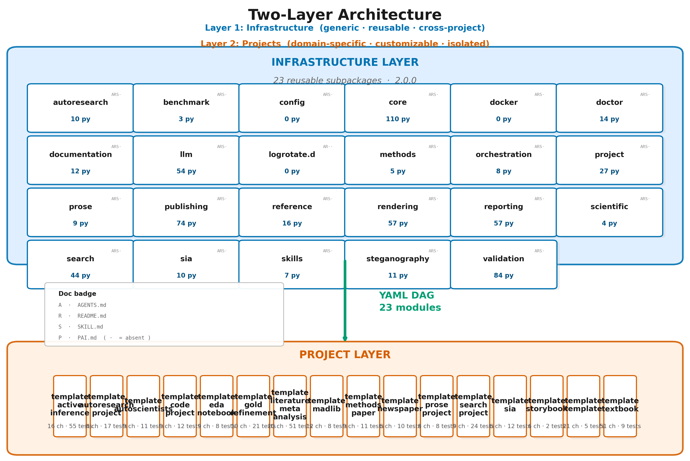
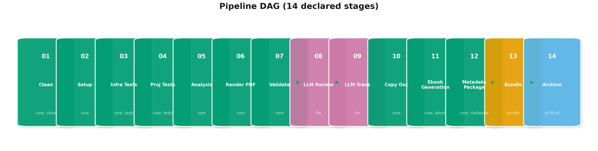
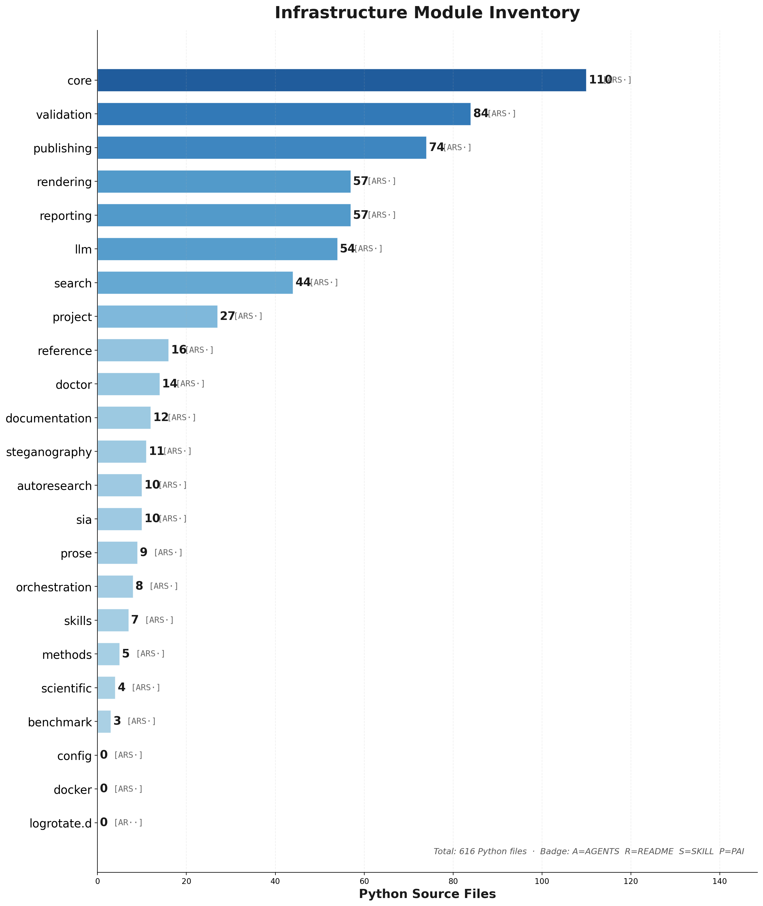
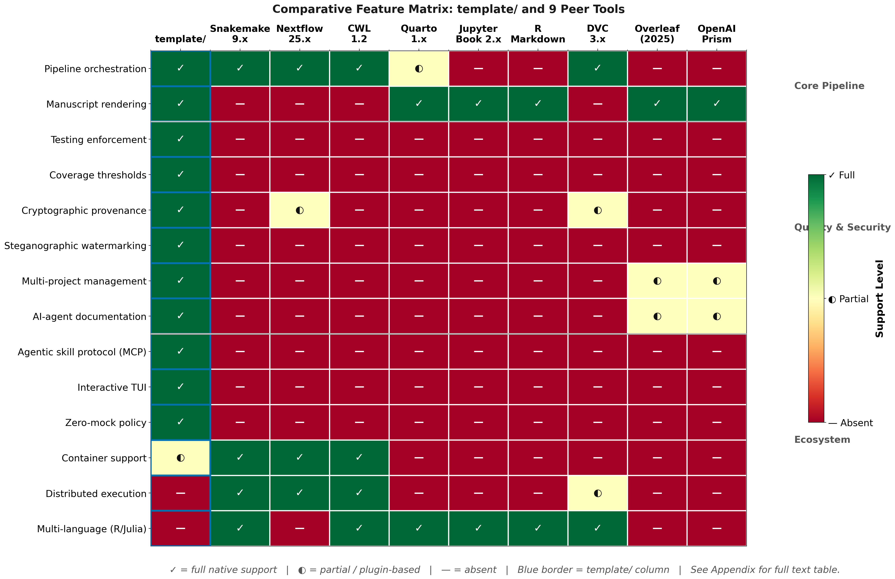

template/ was evaluated through multi-project pipeline
execution, measuring test coverage, pipeline timing, output integrity,
and steganographic performance across the canonical exemplars under
projects/.
Runs used the ./run.sh interactive orchestrator (“all
projects core (fast)” / menu key d)
skipping infrastructure replication and optional LLM stages orchestrated
via python -m infrastructure.orchestration.
Note: lone menu d returns
after success without redrawing the TUI banner.
| Project | Effective core stages¹ | Approx. duration | Tests² | Coverage |
|---|---|---|---|---|
template_code_project |
8 | ~40 s | 236/236 | 90%+ |
template_prose_project |
8 | ~35 s | 120/120 | 90%+ |
template_autoresearch_project |
8 | ~30 s | 296/296 | 90%+ |
¹“Core-only” disables LLM-tagged YAML stages; durations exclude optional network-heavy LLM or long-running retrieval scripts when run with cached fixtures.
²Counts show passing tests versus discovered tests for the sampled configuration.
Overall success: 100 % pipeline completion for sampled runs.
Timing illustrative (Apple Silicon workstation, SSD, fixed seeds).
Search-stage overhead dwarfs the optimization exemplar’s runtime—confirming Stage 02 remains the bottleneck for outbound API traffic while retaining Zero-Mock subprocess + filesystem checks downstream.
| Metric | Value |
|---|---|
| Test files | 470+ |
| Total tests | ~7,968 |
| Infrastructure coverage gate | ≥60 % (repo ≥80 %+ during recent audits) |
| Zero-mock imports | Verified via static scanning |
Exercises Pandoc/XeLaTeX paths, steganography hashing, telemetry,
YAML-driven pipeline DAG resolution, HTTPS-bound optional suites
(pytest-httpserver), and local Ollama-gated subsets.
The introspection module
(template_template.introspection) emits the authoritative
table below—every row reflects
discover_infrastructure_modules(REPO_ROOT).
| Module | Python Files | Has AGENTS.md | Has README.md | Key Exports |
|---|---|---|---|---|
autoresearch |
10 | ✓ | ✓ | build_autoresearch_plan, readiness validation CLI |
benchmark |
3 | ✓ | ✓ | Template harness scoring + comparative gates |
config |
0 | ✓ | ✓ | Repository defaults + hardened templates |
core |
110 | ✓ | ✓ | get_logger, load_config,
TemplateError |
docker |
0 | ✓ | ✓ | Containerisation scaffolding |
doctor |
14 | ✓ | ✓ | Checkout diagnose/fix/undo repairs |
documentation |
12 | ✓ | ✓ | FigureManager, generate_glossary |
llm |
54 | ✓ | ✓ | Ollama helpers, sanitization, review + translation pipelines |
logrotate.d |
0 | ✓ | ✓ | Rotation snippets (documentation-first) |
methods |
5 | ✓ | ✓ | build_methods_orchestration_plan, methods-stage
contracts + validation |
orchestration |
8 | ✓ | ✓ | PipelineRunner, entry point for
./run.sh |
project |
27 | ✓ | ✓ | discover_projects, workspace management |
prose |
9 | ✓ | ✓ | Markdown readability + prose tooling |
publishing |
74 | ✓ | ✓ | Zenodo, executable bundle, archival targets |
reference |
16 | ✓ | ✓ | BibTeX models, parsers, converters |
rendering |
57 | ✓ | ✓ | PDF/HTML/slide rendering, Pandoc filters |
reporting |
57 | ✓ | ✓ | Coverage parsers, dashboards, executive artefacts |
scientific |
4 | ✓ | ✓ | check_numerical_stability,
benchmark_function |
search |
44 | ✓ | ✓ | infrastructure.search.literature clients + cache |
sia |
10 | ✓ | ✓ | Self-Improving-AI loop: task validation, harness, metric capture |
skills |
7 | ✓ | ✓ | discover_skills, SKILL manifest regeneration |
steganography |
11 | ✓ | ✓ | Watermark overlays + hash manifests |
validation |
84 | ✓ | ✓ | PDF + Markdown + integrity CLIs |
All 23 enumerated subdirectories carry Tier‑1/README.md
and Tier‑2/AGENTS.md coverage wherever the Documentation
Duality standard applies; subsets ship Tier‑3 SKILL.md
descriptors for MCP routing (infrastructure/skills manifest
generation).
| Layer | Role |
|---|---|
| System prompts | Root CLAUDE.md, README policy |
| Structural | AGENTS.md directories |
| Skills | Optional SKILL.md manifests + generated
.cursor/skill_manifest.json |
| PAI capsule | Repository level PAI.md narratives |
380+ Markdown shards under docs/ capture
operational knowledge without duplicating auto-generated
inventories.
Stages below mirror pipeline.yaml (executor-topological
order—not strict numeric script filenames). Scripts live under
scripts/.
| Name | Typical script / method | Responsibility | Failure semantics |
|---|---|---|---|
| Clean Output Directories | _run_clean_outputs |
Deletes stale output/ trees |
Blocking |
| Environment Setup | 00_setup_environment.py |
Validates tooling, PYTHONPATH scaffolding | Blocking |
| Infrastructure Tests | 01_run_tests.py --infra-only |
Infra pytest + coverage gates | Tunable thresholds |
| Project Tests | 01_run_tests.py --project-only |
Project pytest + coverage gates | Zero failures default |
| Project Analysis | 02_run_analysis.py |
Executes projects/<name>/scripts/*.py |
Blocking |
| PDF Rendering | 03_render_pdf.py |
Pandoc → XeLaTeX manuscripts | Blocking |
| Output Validation | 04_validate_output.py |
Structural PDF/markdown probes | Blocking / warnings |
| LLM Scientific Review | 06_llm_review.py --reviews-only |
Local Ollama reviews | Skippable / exit 2 tolerated |
| LLM Translations | 06_llm_review.py --translations-only |
Optional translations | Skippable |
| Copy Outputs | 05_copy_outputs.py |
Mirrors deliverables → output/<project>/ |
Soft-fail surfaced in logs |
scripts/07_generate_executive_report.py is
multi-project orchestration glue invoked after
iterating active projects—not a tenth DAG node for single-repo runs
(execute_pipeline.py).
| Project | Pages (approx.) | Metadata | SHA-256 | Overlay | QR Code | Total (approx.) |
|---|---|---|---|---|---|---|
template_code_project |
~20 | <0.3 s | <0.05 s | <0.8 s | <0.4 s | <1.5 s |
template_prose_project |
~25 | <0.3 s | <0.05 s | <0.9 s | <0.4 s | <1.6 s |
template_autoresearch_project |
~25 | <0.2 s | <0.04 s | <0.9 s | <0.3 s | <1.5 s |
All measurements use single-threaded execution on Apple Silicon, and the totals are dominated by watermark-overlay complexity rather than by hashing or metadata embedding, which each stay well under one-tenth of a second per document.
Rendered via projects/templates/template_template
(generate_manuscript_metrics.py → injected tokens such as
23). Architecture figures stem from template_template.architecture_viz—font
sizes constrained by §QA.

Figure 1. Live rendering of the Two-Layer Architecture from repository introspection: the infrastructure layer (top) holds the23 reusable
subpackages, each annotated with its Python file count and a four-slot
documentation badge—A AGENTS.md, R README.md,
S SKILL.md, P PAI.md, with ·
marking an absent file—so a fully documented module reads
[ARSP]. A YAML DAG arrow connects it to the project layer
(bottom) of public exemplars labelled with chapter and test counts. The
takeaway: documentation-duality coverage is near-uniform across the
infrastructure, and every box was placed from the same live data the
prose cites.

Figure 2. Pipeline DAG with 14 YAML-declared stages (core, LLM, ebook, metadata, bundle, archival tags).
Figure 3. Horizontal file-count histogram of every infrastructure subdirectory, sorted largest-first. The long tail of small, single-purpose packages beside a handful of larger ones (core,
validation, publishing) is the visual
signature of the Unix-philosophy modularity the architecture section
argues for—capability concentrated where it compounds, not spread evenly
by fiat.
Figure 4 summarizes the Appendix F capability matrix.

Figure 4. 14 × 10 heatmap annotated in appendix text—green ✓ full native capability, yellow ◐ partial / plugin-hosted, red — unavailable. Rows group Core Pipeline, Quality & Security, then Ecosystem.¹ Nextflow 25.04.0: lineage records exist at workflow scope, not per rendered PDF citation graph.
² DVC: content-addressed artifacts without native prose rendering.
³ DVC: remote object stores (S3, GCS, Azure) without turnkey CI manuscript gates.
Zero mocks: repository policy bans
unittest.mock / patching frameworks in tests.
Filesystem + subprocess realism: ephemeral directories + actual CLI binaries.
HTTP realism: infra suites favour
pytest-httpserver; literature tests hit recorded
fixtures.
template_code_project focuses on
numerical reproducibility assertions.
template_autoresearch_project
exercises the AutoResearch readiness planner
(infrastructure/autoresearch/).
template_search_project exercises
literature-search workflows.